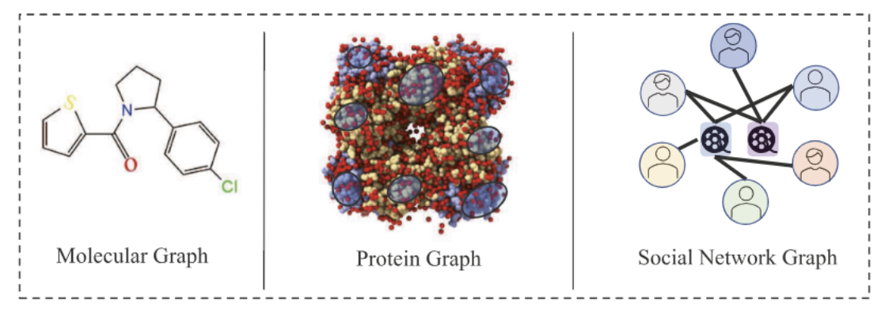
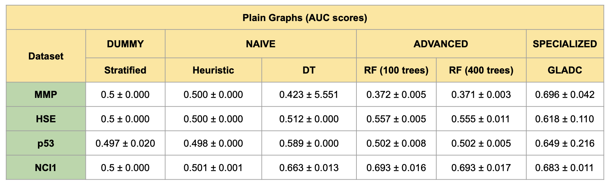
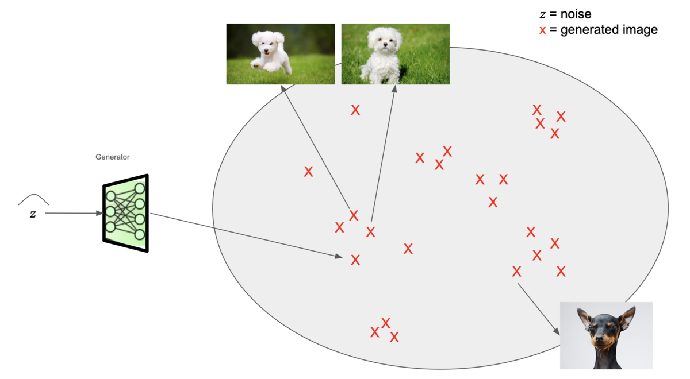
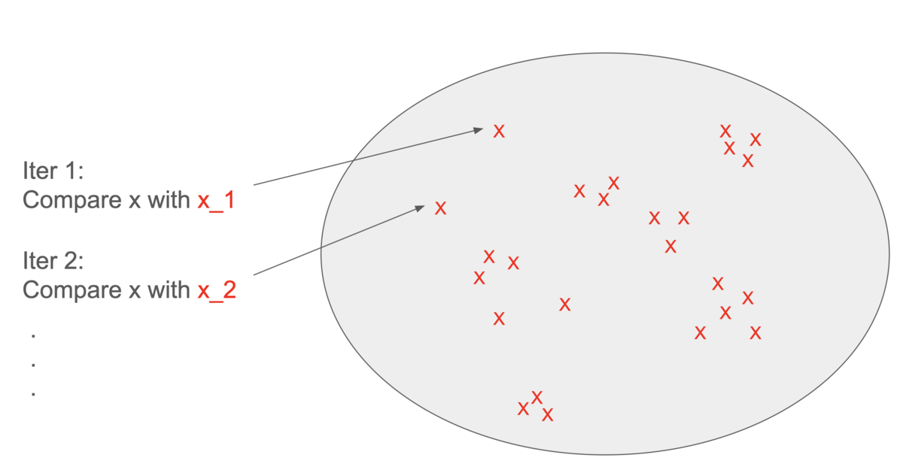
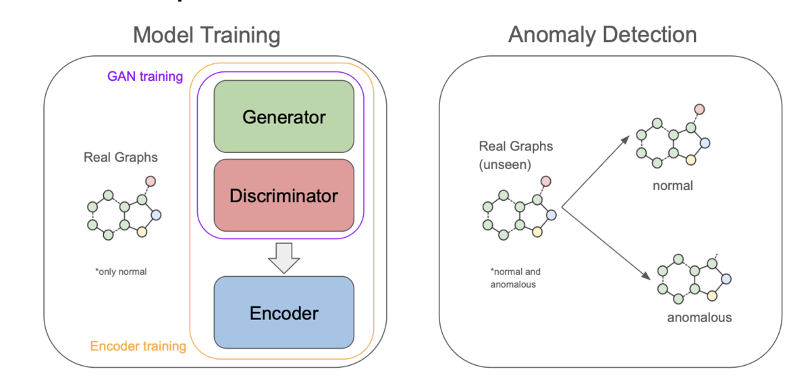
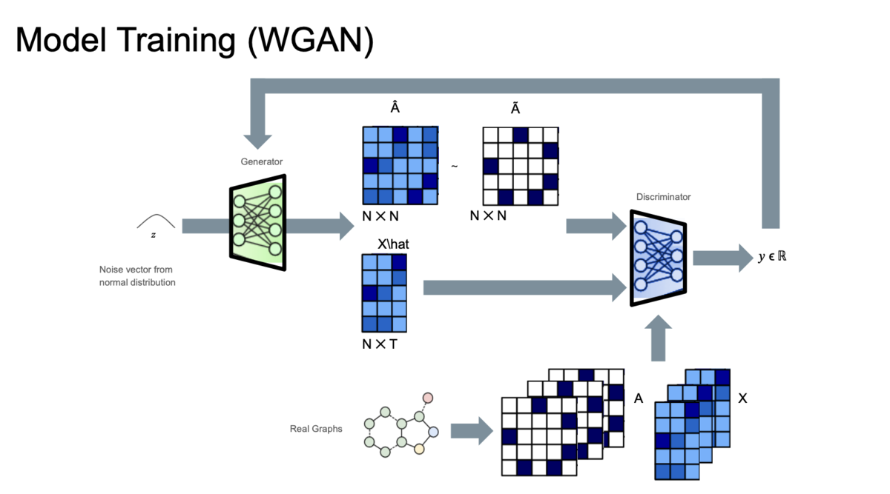
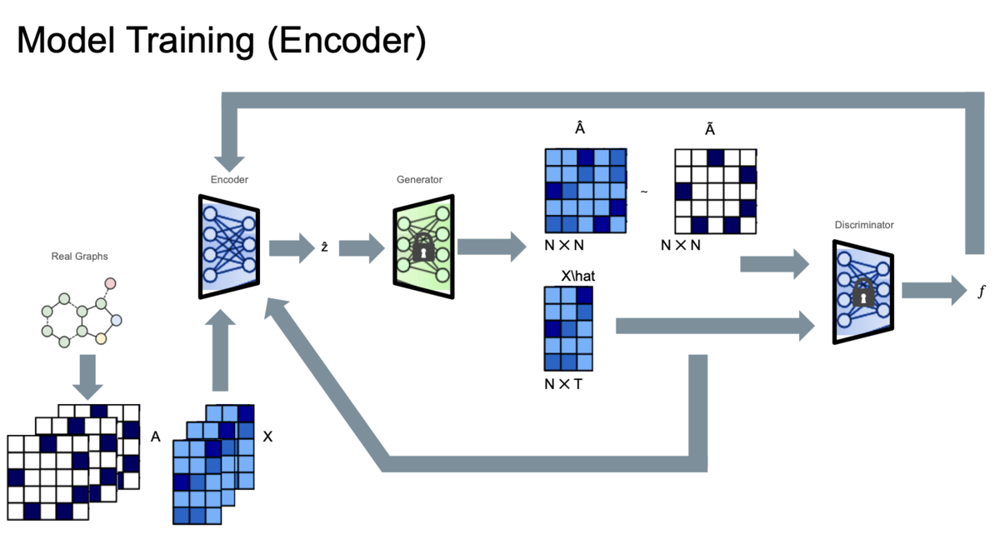

GANs and graph anomalies
Goal: Detect rare graph patterns that differ from the majority of graphs.
Some real world applications include:
- Spotting toxic molecules in chemical compounds analysis.
- Recognizing patient neuroimaging in disease diagnosis.
- Detecting abnormal internet activity graphs.

Problem: Can sometimes be very difficult…

GANs
GANs have shown huge potential on image anomaly detection (IAD). Can we translate GANs’ application on IAD to GLAD?
Solution: gladGAN. A novel approach which lands in the category of “Generic normality feature learning” (GLADC’s close cousin).
- Non anomaly-aware
- Concerned only with normal graphs
Latent Space

How does this relate to anomaly detection?
The generator has learned the mapping . Which means that for every real image there should an in the latent space where (Assuming G’s training has been successful).
So we can compare iteratively…

Works! But as you can imagine, the time that takes to search for x_n grows linearly with the size of X (X is usually huge).
But there is a trick! Have an encoder learn to map a given image x to a noise vector/matrix z. This drastically improves performance (T. Schlegl et al. 2019).
gladGAN



Graph anomaly detection is a relatively hard problem: a scientific gap is identified. GANs are proposed as a novel approach to tackle this problem.